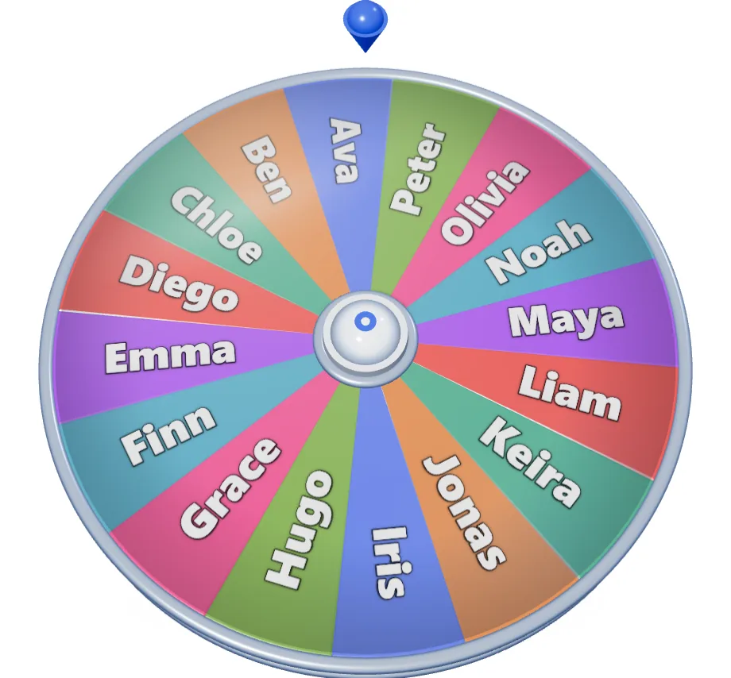

Home › Icebreakers for middle school
Icebreakers for middle school that do not embarrass anyone
In middle school, one thing sinks an icebreaker faster than a boring activity: embarrassment. Students in grades 7 to 9 are sharply aware of being watched. An activity that pushes one child to stand alone at the front usually ends in a silent room, not laughter. So the first rule is: nobody performs alone.
Pick the student with a wheel fair, and never singles one person out

Why middle school icebreakers often fail
- Forcing one student to perform — the bold go up and the shy go quieter.
- Activities that feel childish — grade 9 rejects a game they played in grade 4.
- The teacher points at someone — a choice can always be read as “the favorite kid”.
- Too long — past five minutes the class treats it as playtime.
Six activities that are safe for teenagers
- Two facts, one guess (pairs). Each student writes two facts about themselves and one about the person they sit next to. Another pair guesses which is not their own.
- Quick group quiz. The class splits into four groups; the teacher reads five questions and each group answers on paper.
- Class timeline. Students line up in order of birthday without speaking — all communication is gestures.
- Guess the subject term. One student explains a term from the previous lesson without saying it; their group guesses.
- Name and hobby chain. Good for grade 7 in September: each student repeats the previous name and hobby, then adds their own.
- Paired lightning review. Partners take turns naming one thing they learned last week in 20 seconds.
Rules that keep the activity running
- Every activity is paired or in groups. None asks a student to perform alone.
- A student may pass on one round. Spin again without comment — announce this rule first.
- The teacher plays at least once. A class joins in far more readily after seeing the teacher do it.
Which grade it suits
| Grade | Activities that work best | Note |
|---|---|---|
| Grade 7 | Name and hobby chain, class timeline | They are still getting to know each other |
| Grade 8 | Quick group quiz, guess the subject term | Comfortable together, they want a challenge |
| Grade 9 | Paired lightning review, two facts one guess | Attention is on exam preparation |
Try the wheel here
Want to split the class into groups first? Use the group maker.
Closing the activity
Close with one clear sentence: “Back to the lesson, page …”. Without a firm ending the class stays in play mode and the teacher loses the next few minutes. A three-minute activity with a clean close beats a ten-minute one that trails off.
If the class is large (36 students or more)
In a large class, pairs are safer than small groups: they sort out quickly, no group is overloaded, and nobody is left without a partner. If the number is odd, make one group of three and say so at the start, so nobody feels left over.
Frequently asked questions
What kind of middle school icebreaker does not embarrass students?
A paired or small-group activity, with nobody called to the front alone. Two facts one guess and paired lightning review are good examples.
How long should a middle school icebreaker last?
Three to five minutes. Past five the class treats it as playtime and struggles to get back on task.
Do I have to use a name wheel?
Not required, but the wheel removes the sense that the teacher calls on favorites. Every name is visible and the tool decides.
Is this suitable for grade 9 while exams are coming up?
Yes, as long as you use it as a lightning review — a quick run through the material, not a game.